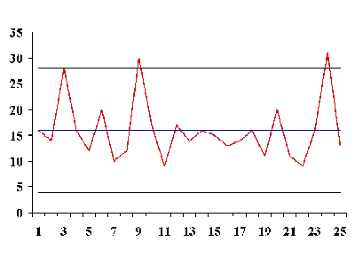

|
6.
Process or Product Monitoring and Control
6.3. Univariate and Multivariate Control Charts 6.3.3. What are Attributes Control Charts?
|
|||||||||||||||||||||||||||||||||||||||||||||||||||||||||||||||||||||||||
| Defective items vs individual defects |
The literature differentiates between defect and
defective, which is the same as differentiating between
nonconformity and nonconforming units. This may sound
like splitting hairs, but in the interest of clarity let's try to
unravel this man-made mystery.
Consider a wafer with a number of chips on it. The wafer is referred to as an "item of a product". The chip may be referred to as "a specific point". There exist certain specifications for the wafers. When a particular wafer (e.g., the item of the product) does not meet at least one of the specifications, it is classified as a nonconforming item. Furthermore, each chip, (e.g., the specific point) at which a specification is not met becomes a defect or nonconformity. So, a nonconforming or defective item contains at least one defect or nonconformity. It should be pointed out that a wafer can contain several defects but still be classified as conforming. For example, the defects may be located at noncritical positions on the wafer. If, on the other hand, the number of the so-called "unimportant" defects becomes alarmingly large, an investigation of the production of these wafers is warranted. Control charts involving counts can be either for the total number of nonconformities (defects) for the sample of inspected units, or for the average number of defects per inspection unit. |
||||||||||||||||||||||||||||||||||||||||||||||||||||||||||||||||||||||||
| Poisson approximation for numbers or counts of defects |
Let us consider an assembled product such as a microcomputer. The opportunity for the occurrence of any given defect may be quite large. However, the probability of occurrence of a defect in any one arbitrarily chosen spot is likely to be very small. In such a case, the incidence of defects might be modeled by a Poisson distribution. Actually, the Poisson distribution is an approximation of the binomial distribution and applies well in this capacity according to the following rule of thumb: The sample size \(n\) should be equal to or larger than 20 and the probability of a single success, \(p\), should be smaller than or equal to 0.05. If \(n \ge 100\), the approximation is excellent if \(np\) is also \(\le 10\). |
||||||||||||||||||||||||||||||||||||||||||||||||||||||||||||||||||||||||
| Illustrate Poisson approximation to binomial |
To illustrate the use of the Poisson distribution as an
approximation of a binomial distribution, consider the following
comparison: Let \(p\),
the probability of a single success in \(n = 200\)
trials, be 0.025.
Find the probability of exactly 3 successes. If we assume that \(p\) remains constant then the solution follows the binomial distribution rules, that is: \( p(x) = \left( \begin{array}{c} n \\ x \end{array} \right) p^{x}(1 - p)^{n-x} = \left( \begin{array}{c} 200 \\ 3 \end{array} \right) (0.025^{3})(0.975^{197}) = 0.1399995 \, . \) By the Poisson approximation we have
|
||||||||||||||||||||||||||||||||||||||||||||||||||||||||||||||||||||||||
| The inspection unit |
Before the control chart parameters are defined there is one more
definition: the inspection unit. We shall count the number
of defects that occur in a so-called inspection unit. More often
than not, an inspection unit is a single unit or item of product;
for example, a wafer. However, sometimes the inspection unit could
consist of five wafers, or ten wafers and so on. The size of the
inspection units may depend on the recording facility, measuring
equipment, operators, etc.
Suppose that defects occur in a given inspection unit according to the Poisson distribution, with parameter \(c\) (often denoted by \(np\) or the Greek letter \(\lambda\)). In other words |
||||||||||||||||||||||||||||||||||||||||||||||||||||||||||||||||||||||||
| Control charts for counts, using the Poisson distribution |
$$ p(x) = \frac{e^{-c}c^{x}}{x!} \, ,$$
where \(x\) is the number of defects and \(c > 0\) is the parameter of the Poisson distribution. It is known that both the mean and the variance of this distribution are equal to \(c\). Then the \(k\)-sigma control chart is $$ \begin{eqnarray} UCL & = & c + k\sqrt{c} \\ \mbox{Center Line} & = & c \\ LCL & = & c - k\sqrt{c} \, . \end{eqnarray} $$
|
||||||||||||||||||||||||||||||||||||||||||||||||||||||||||||||||||||||||
| Control chart example using counts |
An example may help to illustrate the construction of control limits
for counts data. We are inspecting 25 successive wafers, each
containing 100 chips. Here the wafer is the inspection unit. The
observed number of defects are
From this table we have
$$ UCL = \bar{c} + 3 \sqrt{\bar{c}} = 16 + 3 \sqrt{16} = 28 $$ $$ LCL = \bar{c} - 3 \sqrt{\bar{c}} = 16 - 3 \sqrt{16} = 4 \, . $$ |
||||||||||||||||||||||||||||||||||||||||||||||||||||||||||||||||||||||||
| Sample counts control chart |
 |
| Transforming Poisson Data | |
| Normal approximation to Poisson is adequate when the mean of the Poisson is at least 5 |
We have seen that the 3-sigma limits for a \(c\)
chart, where \(c\)
represents the number of nonconformities, are given by
$$ \bar{c} \pm 3 \sqrt{\bar{c}} \, , $$
Let the mean be 10. Then the lower control limit is 0.513. However, \(P(c=0) = 0.000045\), using the Poisson formula. This is only 1/30 of the assumed area of 0.00135. So one has to raise the lower limit so as to get as close as possible to 0.00135. From Poisson tables or computer software we find that \(P(1) = 0.0005\) and \(P(2) = 0.0027\), so the lower limit should actually be 2 or 3. |
| Transforming count data into approximately normal data |
To avoid this type of problem, we may resort to a transformation that
makes the transformed data match the normal distribution better.
One such transformation described by Ryan (2000) is
$$ Y = 2 \sqrt{c} \, , $$
Similar transformations have been proposed by Anscombe (1948) and Freeman and Tukey (1950). When applied to a \(c\) chart these are
|
| Warning for highly skewed distributions | Note: In general, it is not a good idea to use 3-sigma limits for distributions that are highly skewed (see Ryan and Schwertman (1997) for more about the possibly extreme consequences of doing this). |